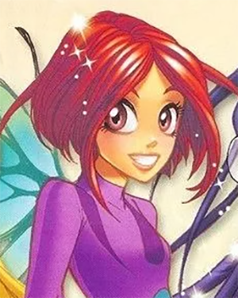

| Возраст | 13 лет |
|---|---|
| Дата Рождения | 19 января 1992(Козерог) |
| Рост | 156 см |
| Цвет волос | Ярко-рыжий |
| Цвет глаз | Карий |
Как Хранительница Сердца Кондракара, Вилл способна управлять его энергией. Сердце Кондракара - очень могущественный артефакт, способный на самую мощную магию. Оно же и дает Вилл уникальную способность разговаривать с электроприборами.
Вилл — очень ответственный, дружелюбный и заботливый лидер, который в любой момент готов подбодрить своих приунывших сокомандниц и сплотить их, сгладив острые углы конфликтов. Сама Вилл считает себя спокойной и приземленной, но это не совсем так, потому что временами она проявляет вспыльчивость и неустойчивость своего характера, прямо как ее мама. Также девушка достаточно ревнива, что зачастую мешает ей трезво оценивать ситуацию, в чем она, между прочим говоря, очень хороша. Но, даже не смотря на это, Вилл все равно остается очень чувствительной девушкой. Так, известно, что у нее есть проблемы с доверием к людям, так как она боится быть разочарованной или отвергнутой, что, скорее, является психологической травмой, которой поспособствовали старые друзья Вилл из Фадден Хиллс. Девушка очень любит животных, но особенно она без ума от лягушек, что можно заметить по тому, как она коллекционирует все, что связано с ними, кроме самих амфибий, конечно.